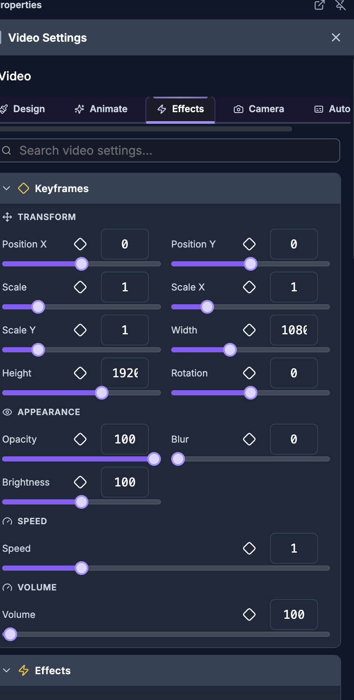

For humans — and for AI helping humans. This document describes how a person edits video by
hand using the on-screen controls of the SkillTown video editor. It is not an AI skill or an
automation API, so if you are an AI agent, do not treat these steps as callable commands — for
programmatic/automated editing use the agent skills and commands documented elsewhere (see
_Agent/AGENTS.md). You may, however, read this doc to answer a user's "how do I…" questions
and walk them, step by step, through performing these actions themselves in the editor UI.
Add stylized effects, tune image/video color, remove green or blue screens, mask clips, blend layers, and choose exact solid or gradient colors.
Where to find it
Select an image, video, text, caption, shape, audio item, or scene on the canvas or timeline to open the properties panel. Visual presets are in Effects. Images and videos also have Basic, Border & Shadow, Clip Mask, Blend Mode, and Color & Filters sections.
For images, open Remove Background for chroma key controls. For videos, open Color Keying (Chroma) or AI Auto Matting. Videos also include Face Track when you want the crop to follow faces.
Color pickers appear anywhere you click a color field, such as Color, Fill, Background Color, Stroke Color, Shadow Color, Color 1, or Color 2.
What you can do
- Apply stackable visual presets from Color, Visual, Glow & Shadow, and Motion groups.
- Search presets with Search effects..., reuse Recently Used, and manage Applied effects.
- Time each applied effect with Start, End, Fade In, Fade Out, and Easing.
- Apply filter presets such as Cinematic, Vintage, B&W Film, Warm, Cool, and Vivid.
- Manually tune Blur, Brightness, Contrast, Saturation, Hue, Sepia, and Grayscale.
- Change layer interaction with Blend Mode options like Multiply, Screen, Overlay, and Color Dodge.
- Crop visible media into Clip Mask shapes such as Circle, Diamond, Hexagon, Star, and Heart.
- Remove backgrounds with Remove Background, Color Keying (Chroma), or AI Auto Matting.
- Track faces in video with Face Track, Auto, Follow, Sensitivity, and Preview.
- Style images/videos with Border & Shadow, Border, Shadow, Radius, Blur, Brightness, and Flip.
- Pick colors with Solid, Gradient, Hex, opacity %, and Pick color from screen.
How to apply visual effect presets

- Select the item you want to stylize.
- In the properties panel, open Effects.
- Use Search effects... if you know the look you want. Search checks the preset name, description, and effect type. If nothing matches, the panel shows No effects found for "{searchQuery}".
- If you have used effects before, use Recently Used to reapply one of the last six presets.
- Browse the preset groups and click a preset to apply it:
| Group |
Presets |
| Color |
Black & White, Desaturated, Noir, Vintage Sepia, Warm Tone, Retro Film, Negative, X-Ray, Hue Shift 90°, Hue Shift 180°, Hue Shift 270°, Rainbow Shift, Vivid Colors, Muted Colors, Color Pop, High Contrast, Low Contrast, Dramatic, Washed Out |
| Visual |
Soft Focus, Heavy Blur, Dreamy, Motion Blur, Flash, Dimmed, Blackout, Overexposed, Subtle Vignette, Dramatic Vignette, Spotlight, Light Grain, Heavy Grain, 8mm Film |
| Glow & Shadow |
Soft Shadow, Hard Shadow, Long Shadow, Colored Shadow, White Glow, Neon Blue, Neon Pink, Neon Green, Neon Red, Neon Orange, Golden Glow, Soft Glow |
| Motion |
Light Shake, Heavy Shake, Earthquake, Slow Pulse, Fast Pulse, Breathing, Subtle Glitch, Heavy Glitch, VHS Tracking |
- After a preset is added, it appears under Applied (1), Applied (2), and so on.
- Click an applied effect row to expand or collapse its detailed controls.
- Use Disable to temporarily turn an effect off, Enable to turn it back on, or Delete to remove it.
How to adjust an applied effect
- Open Effects and expand an item under Applied.
- Applied rows use the effect type label, so a preset may appear as Grayscale, Sepia, Invert, Hue Rotate, Saturate, Contrast, Blur, Brightness, Vignette, Film Grain, Drop Shadow, Glow, Shake, Pulse, or Glitch.
- Under Timing, set Start and End. Values display in frames, such as
0f; End shows end when the effect runs until the item finishes.
- Under Transitions, set Fade In and Fade Out. Both use frames and can be set from 0 to 60 frames.
- Choose Easing from the dropdown:
| Easing options |
| Linear, Ease, Ease In, Ease Out, Ease In Out, Ease In Quad, Ease Out Quad, Ease In Out Quad, Ease In Cubic, Ease Out Cubic, Ease In Out Cubic |
- Under Parameters, tune the controls shown for that effect:
| Control |
Appears for |
What it changes |
| Intensity |
Most effects |
Overall strength, shown as a percentage. |
| Hue |
Hue shift effects |
Color rotation in degrees. |
| Blur |
Shadow and glow effects |
Softness of the shadow or glow in pixels. |
| Color |
Shadow and glow effects |
The shadow or glow color. |
| Amount |
Shake effects |
Shake distance in pixels. |
| Scale |
Pulse effects |
Maximum pulse size as a percentage. |
| Speed |
Pulse effects |
Pulse speed multiplier. |
| Frequency |
Glitch effects |
How often the glitch appears. |
| Amplitude |
Glitch effects |
Glitch offset strength in pixels. |
- For entry/exit preset parameter controls elsewhere in the panel, the editable labels are Scale, Scale X, Scale Y, Opacity, Position X, Position Y, Rotation, Blur, and Brightness, with Start, End, Duration (frames), Easing, and Reset to Defaults.
How to use image and video filters
- Select an image or video.
- Open Color & Filters.
- Under Presets, click a quick look:
| Preset |
Brightness |
Contrast |
Saturation |
Hue |
Sepia |
Grayscale |
Result |
| Reset |
100 |
100 |
100 |
0 |
0 |
0 |
Neutral color. |
| Cinematic |
95 |
120 |
85 |
0 |
10 |
0 |
Lower saturation with stronger contrast. |
| Vintage |
105 |
90 |
70 |
-10 |
40 |
0 |
Soft, warm retro color. |
| B&W Film |
105 |
130 |
0 |
0 |
0 |
100 |
High-contrast black-and-white. |
| Warm |
105 |
105 |
120 |
10 |
20 |
0 |
Warmer, more saturated color. |
| Cool |
100 |
105 |
90 |
-20 |
0 |
0 |
Cooler color shift. |
| Noir |
90 |
150 |
0 |
0 |
0 |
100 |
Dark, high-contrast monochrome. |
| Faded |
115 |
85 |
60 |
0 |
15 |
0 |
Bright, low-contrast faded look. |
| Vivid |
105 |
115 |
160 |
0 |
0 |
0 |
Bright, saturated color. |
| Sunset |
105 |
110 |
130 |
15 |
25 |
0 |
Warm orange sunset tone. |
| Moody |
85 |
125 |
70 |
-5 |
5 |
0 |
Darker, dramatic color. |
| Pastel |
115 |
80 |
50 |
0 |
10 |
0 |
Bright, soft, low-saturation look. |
| Teal & Orange |
100 |
115 |
130 |
-15 |
10 |
0 |
Teal/orange-style grade. |
| Dream |
115 |
90 |
80 |
5 |
20 |
0 |
Bright, soft, warm look. |
| Hi Contrast |
100 |
160 |
110 |
0 |
0 |
0 |
Very strong contrast. |
| Matte |
110 |
90 |
85 |
0 |
8 |
0 |
Soft matte finish. |
- Under Adjust, use the manual sliders:
| Slider |
Range shown |
What it does |
| Contrast |
0–200% |
Reduces or increases separation between dark and light areas. |
| Saturation |
0–200% |
Removes color at low values or boosts color at high values. |
| Hue |
-180°–180° |
Rotates all colors around the color wheel. |
| Sepia |
0–100% |
Adds a brown vintage tone. |
| Grayscale |
0–100% |
Converts the image or video toward black-and-white. |
- For basic image/video tuning, open Basic and use:
| Control |
Range shown |
Where it appears |
What it does |
| Blur |
0–100 |
Basic |
Softens the selected image or video. |
| Brightness |
0–200 |
Basic |
Darkens below 100 or brightens above 100. |
| Opacity |
0–100 |
Basic |
Makes the selected image or video more transparent. |
| Radius |
0–100 |
Basic |
Rounds the corners of the selected image or video. |
| Rounded |
0–100px |
Other rounded-corner controls |
Rounds corners where the control is labeled Rounded. |
How to use blend modes
- Select an image or video.
- Open Blend Mode.
- Choose a mode from the dropdown, or click one of the quick buttons shown in the grid.
| Group |
Options |
| Basic |
Normal |
| Darken |
Multiply, Darken, Color Burn |
| Lighten |
Screen, Lighten, Color Dodge |
| Contrast |
Overlay, Hard Light, Soft Light |
| Inversion |
Difference, Exclusion |
| Component |
Hue, Saturation, Color, Luminosity |
Use Normal when you do not want the clip to blend with layers underneath it.
How to mask an image or video into a shape
- Select an image or video.
- Open Clip Mask.
- Click a mask preset. The selected item is clipped into that shape without changing the original media.
| Clip Mask options |
| None, Circle, Rounded, Diamond, Hexagon, Star, Triangle, Pentagon, Octagon, Heart, Cross, Arrow |
Choose None to remove the mask.
How to remove a green screen or blue screen with chroma key
- Select the image or video with the colored background.
- For an image, open Remove Background. For a video, open Color Keying (Chroma).
- Turn on Remove Background.
- Under Key Colors (Max 5), choose the color to remove:
- Click Green for a green screen.
- Click Blue for a blue screen.
- Click + to add another key color.
- Click Eyedropper to sample a color from the preview. While active, it shows Picking….
- If the toggle is off, the panel reminds you: Pick the backdrop color now, then toggle Remove Background on.
- Click a color swatch to expand that color’s controls. The color row shows the hex color and a compact readout like
T:45 E:20 S:35 for tolerance, edge softness, and spill removal.
- Tune each key color separately:
| Control |
Default |
Range |
What it does |
| Tolerance |
45 |
0–100 |
Expands or narrows the range of colors removed around the key color. Increase it when the backdrop remains visible. Decrease it if the subject starts disappearing. |
| Edge Softness |
20 |
0–100 |
Feathers the transparent edge. Increase it for smoother hair, fabric, or motion edges. |
| Spill Removal |
35 |
0–100 |
Reduces green/blue color reflected on the subject. Increase it if edges look tinted. |
| Reset |
— |
— |
Restores that color’s chroma settings to default values. |
- Use Denoise (clean edges) if compressed footage leaves blocky or noisy edges. The note Global — smooths chroma for all colors means this one slider affects every key color.
- If you added the wrong color, hover the swatch and use Remove this color.
How to remove a video background with AI Auto Matting
- Select a video.
- Open AI Auto Matting.
- Turn on AI Auto Matting.
- If you are not using the desktop app, you may see AI Auto Matting with the message Requires the Desktop app for local GPU processing.
- If the local model is not installed, the panel says Requires an AI model (~15MB) to be downloaded once to your device. Click Download AI Model.
- During setup, the panel shows Downloading... and a percentage.
- When the feature is on and ready, the status shows AI Matting Active (Local GPU).
AI matting is separate from chroma key. Use chroma key for green/blue screens; use AI Auto Matting when the background is not a single key color.
How to use Face Track on a video
- Select a video.
- Open Face Track.
- Click Auto or Follow:
| Button |
What it does |
| Auto |
Detects faces and can split if there are 2 faces. The helper text says Auto — split if 2 faces. |
| Follow |
Detects one speaker and pans the crop window to follow. The helper text says Follow — single pan. |
- While detection runs, the section shows Processing….
- After face tracking is active, use the controls:
| Control |
What it does |
| Preview |
Shows or hides the face preview overlay. The tooltip changes between Show face preview overlay and Hide face preview overlay. |
| Re-detect |
Runs detection again. Use Auto or Follow in this row to update the result. |
| Sensitivity |
Re-runs tracking with Tight, Normal, or Loose. |
| Regen |
Regenerates the tracking keyframes from the detected faces. |
| Remove |
Removes face tracking from the video. |
- The active badge can show Split (...) for split layouts or Follow for a single following crop.
How to add borders, shadows, radius, blur, brightness, and flip
- Select an image or video.
- Open Basic for quick appearance controls:
| Control |
What it changes |
| Radius |
Rounds corners. |
| Blur |
Softens the whole image or video. |
| Brightness |
Darkens or brightens the whole image or video. |
| Opacity |
Changes transparency. |
- Open Border & Shadow for outline and shadow styling:
| Area |
Controls |
| Border |
Color and Size. In some border controls the width slider is labeled Width. |
| Shadow |
Color, X, Y, and Blur. |
- Click the border or shadow Color field to open the color picker.
- If the selected item exposes Flip, use Flip X to mirror horizontally or Flip Y to mirror vertically.
How to use the color picker, gradients, and eyedropper
- Click any visible color field, such as Color, Fill, Stroke Color, or Shadow Color.
- If both modes are available, choose Solid for one color or Gradient for multiple color stops.
- For a solid color:
| Control |
What to do |
| Color board |
Drag inside the square color board to choose shade and brightness. |
| Hue ribbon |
Drag along the rainbow ribbon to change the base hue. |
| Alpha ribbon / % |
Set opacity. 100 is fully opaque; lower values are more transparent. |
| Hex |
Type a hex value and press Enter or click away. |
| Pick color from screen |
Click the eyedropper button, then sample any visible pixel. |
- For a gradient:
- Use the same board, Hex, %, and Pick color from screen controls to edit the active stop.
- Click the gradient stop bar to add a stop when adding stops is available.
- Drag stops to reposition them.
- Double-click a stop to remove it.
- Click the gradient mode control to switch between linear and radial styles.
- Drag the angle handle to change the gradient direction for linear gradients.
- For radial gradients, click one of the position points to move the center.
- For text gradients, turn on Gradient, then set Color 1, Color 2, and Direction. The helper text says Use a text gradient instead of a solid color.
Tips & good to know
- Effects can stack. For example, a color preset, a glow, and a motion effect can all be applied to the same item.
- Recently Used appears after you have applied effects before and is hidden while you are searching.
- End shows
end when the effect runs until the item finishes.
- Chroma key supports up to five key colors, which helps with uneven screens, shadows, or mixed green/blue backgrounds.
- If chroma key removes parts of your subject, lower Tolerance before changing other settings.
- If the background is gone but the edge looks harsh, raise Edge Softness slightly.
- If the subject has a green or blue fringe, raise Spill Removal.
- Raise Denoise (clean edges) only as much as needed; high denoise can soften fine detail.
- Use Reset in Color & Filters before trying a new grade if you want to start from neutral.
- Use Normal in Blend Mode to return a layer to standard compositing.
- Use None in Clip Mask to remove shape clipping.
- Use AI Auto Matting for regular backgrounds and Remove Background / Color Keying (Chroma) for green or blue screens.